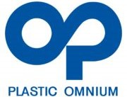

Work Experience
Summary
- My journey at ROLEX is evolving from Industrial Engineer to Data Scientist. It is driven by a mission to leverage data for operational excellence.
I am honing my skills in applied machine learning, leveraging my expertise in operational efficiency, aligning seamlessly with the company's innovation-driven culture.
My goal is to contribute to our team's success and uphold the organization's reputation for quality transposed to the digital world.
- My tenure as a Program Manager at Plastic Omnium honed my ability to lead complex, multi-site development projects, ensuring product reliability and customer satisfaction.
This experience has been instrumental in empowering me to drive improvements and uphold commitment to excellence at my current employer.
ROLEX S.A., SWITZERLAND — JAN.2018-CURRENT
Data Scientist (New role since Jan. 2024)
- Perform advanced data analysis and implement predictive models using Python, Machine Learning, and Dataiku DSS.
- Design and implement initial GUI for exploratory project phases using Dash and WebApp frameworks.
Industrial Project Leader
- Lead concurrent engineering activities to deliver industrial blueprints for new watch components and sub-assemblies.
- Conduct statistical and multi-tier geometric analysis of product specifications to ensure that the manufactured parts meet design standards.
- Develop internal standards and specifications, applying the latest ISO-GPS standards, suitable for Numerical Control Process Management
- Develop team-wide applications such as activity reporting and task planning, toolsets for statistical calculation and comparative analysis of engineering drawings.
 PLASTIC OMNIUM K.K., Tokyo — SEPT 2015-AUG 2017
Program Manager
- Lead the development and industrialisation projects of fuel tank systems for a major automotive OEM through planning/budgeting, design, prototyping, product launch and ramp-up phases as well as change management during production phase.
- Establish and control planning, budget, quality and financial objectives.
- Manage multi-site cross-functional teams, nurturing collaborative mode to achieve defined quality, time, and cost targets whilst controlling risks and enforcing best practices.
- Interface with internal and external stakeholders and ensure customer satisfaction.
AGGREKO JAPAN CO. LTD, Tokyo — SEPT 2012-AUG 2015
Engineering Manager
- Lead engineering activities, reporting to Head of Eng. for APAC.
- Supervise local projects, and establish package requirements with customer.
- Lead pre-sales engineering in Temperature Control applications leveraging fleet of generators, loadbanks, and HVAC equipment incl. chiller, cooling tower, heat exchanger.
- Drive local QHSE initiatives, promote compliance with health, safety, and environmental regulations (e.g. exhaust emissions, noise, high pressure vessels).
MATISA JAPAN CO. LTD, Tokyo — JAN 2006-AUG 2012
Technical Manager
- Oversee technical activities related to the commissioning works and operational life of heavy duty railway maintenance machines (multi-tie tamping and measuring vehicles).
- Manage Customer Service team and give training on specialised applications such as computer-aided track guidance system.
- Interface with customer on technical matters, and capture new generation product requirements in collaboration with customers and national research institute (RTRI).
- Develop Web applications for multi-site service operation management.
DENTSPLY MAILLEFER INSTRUMENTS SA, SWITZERLAND — FEB 2003-DEC 2005
Assistant to Director Of Operations
- Mine (SQL) and analyse operational data and model multi-objective functions related to inventory level, and operation efficiency.
- Develop server-side production applications running on databases (Oracle), one of which generates a Delivery Master Plan Schedule yielding optimal production lot sizes.
- Project coordinator for the implementation of ERP production planning module.
MITSUBISHI ELECTRIC CORP, ADVANCED TECH. R&D, JAPAN — JUL 2001-JUL 2002
Intern
- Model the thermo-hydraulic behaviour of a micro gas turbine
- Develop in C++ a genetic algorithm for exergy-effective operation planning of Combined Cycle Gas Turbine system (e.g. MGTs, HRB).